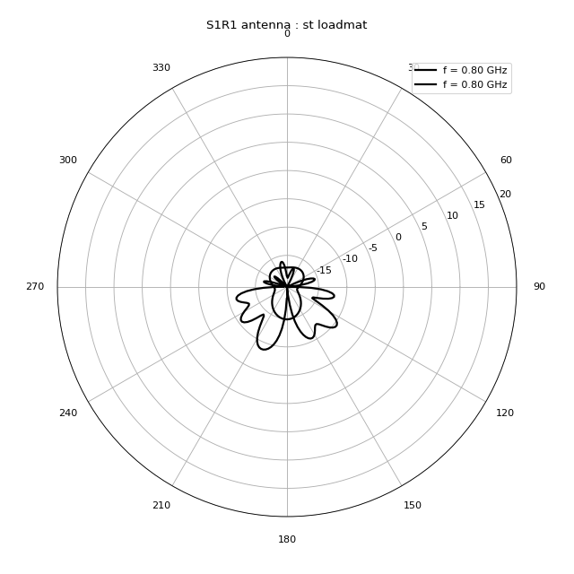

Antenna¶
-
class
pylayers.antprop.antenna.Antenna(typ='Omni', **kwargs)[source]¶ Bases:
pylayers.antprop.antenna.Patternname : Antenna name
nf : number of frequency nth : number of theta nph : number of phi
Ft : Normalized Ftheta (ntheta,nphi,nf) Fp : Normalized Fphi (ntheta,nphi,nf) sqG : square root of gain (ntheta,nphi,nf)
theta : theta base 1 x ntheta phi : phi base 1 x phi
C : VSH Coefficients
info : Display information about antenna vsh : calculates Vector Spherical Harmonics show3 : Geomview diagram plot3d : 3D diagram plotting using matplotlib toolkit
- Antenna trx file can be stored in various order
- natural : HFSS ncp : near filed chamber
It is important when initializing an antenna object to be aware of the typ of trx file
.trx (ASCII Vectorial antenna Pattern)
F Phi Theta Fphi Ftheta
Methods Summary
Fsynth([theta, phi])Perform Antenna synthesis Fsynth1(theta, phi)calculate complex antenna pattern from VSH Coefficients (shape 1) Fsynth2(theta, phi[, typ])pattern synthesis from shape 2 vsh coeff Fsynth2b(theta, phi)pattern synthesis from shape 2 vsh coefficients Fsynth2s([dsf])pattern synthesis from shape 2 vsh coefficients Fsynth3([theta, phi, typ])synthesis of a complex antenna pattern from SH coefficients (vsh or ssh in shape 3) cart2pol(Fx, Fy, Fz, ith)converts Fx,Fy,Fz to Ftheta, Fphi for theta=ith checkpole([kf])display the reconstructed field on pole for integrity verification coeffshow(**kwargs)display antenna coefficient elec_delay(tau)apply an electrical delay errel([kf, dsf, typ])calculates error between antenna pattern and reference pattern getdelay([delayCandidates])get electrical delay info()gives info about antenna object initvsh([lmax])Initialize a void vsh structure load_atoll([directory])load antenna from Atoll file load_trx([directory, nf, ntheta, nphi, ncol])load a trx file (deprecated) loadhfss([lfa, Nt, Np])load antenna from HFSS file loadmat([directory])load an antenna stored in a mat file loadsh2()load spherical harmonics coefficient in shape 2 loadsh3()Load antenna’s sh3 file loadtrx(directory[, param])load trx file (SATIMO Near Field Chamber raw data) loadvsh2()load antenna from .vsh2 file format loadvsh3()Load antenna’s vsh3 file loadvsh3_old()Load antenna vsh coefficients in shape 3 ls([typ])list the antenna files in antenna project directory minsh3([emax])creates vsh3 with significant coeff until given relative reconstruction error movie_vsh([mode])animates vector spherical coeff w.r.t frequency mse(Fth, Fph[, N])mean square error between original and reconstructed pattern([theta, phi, typ])return multidimensionnal radiation patterns photo([directory])show a picture of the antenna plot3d([k, typ, col])show 3D pattern in matplotlib pol2cart(ith)converts FTheta, FPhi to Fx,Fy,Fz for theta=ith pol3d([k, R, St, Sp, silent])Display polarisation diagram in 3D savesh2()save coeff in .sh2 antenna file savesh3()save antenna in sh3 format savevsh2([filename])save coeff in a .vsh2 antenna file savevsh3([force])save antenna in vsh3 format show3([k, po, T, txru, typ, mode, silent])show3 geomview Methods Documentation
-
Fsynth(theta=[], phi=[])[source]¶ Perform Antenna synthesis
theta : np.array phi : np.array
call Antenna.Fpatt or Antenna.Fsynth3The antenna pattern synthesis is done either from spherical harmonics coefficients or from an analytical expression of the radiation pattern.
-
Fsynth1(theta, phi)[source]¶ calculate complex antenna pattern from VSH Coefficients (shape 1)
theta : ndarray (1xNdir) phi : ndarray (1xNdir) k : int
frequency indexFt , Fp
-
Fsynth2(theta, phi, typ='vsh')[source]¶ pattern synthesis from shape 2 vsh coeff
theta : array 1 x Nt phi : array 1 x Np pattern : boolean
default False- typ : string
- {vsh | ssh}
Calculate complex antenna pattern from VSH Coefficients (shape 2) for the specified directions (theta,phi) theta and phi arrays needs to have the same size
-
Fsynth2b(theta, phi)[source]¶ pattern synthesis from shape 2 vsh coefficients
theta : 1 x Nt phi : 1 x Np
Calculate complex antenna pattern from VSH Coefficients (shape 2) for the specified directions (theta,phi) theta and phi arrays needs to have the same size
-
Fsynth2s(dsf=1)[source]¶ pattern synthesis from shape 2 vsh coefficients
phi
Calculate complex antenna pattern from VSH Coefficients (shape 2) for the specified directions (theta,phi) theta and phi arrays needs to have the same size
-
Fsynth3(theta=[], phi=[], typ='vsh')[source]¶ synthesis of a complex antenna pattern from SH coefficients (vsh or ssh in shape 3)
Ndir is the number of directions
theta : ndarray (1xNdir if not pattern) (1xNtheta if pattern) phi : ndarray (1xNdir if not pattter) (1xNphi if pattern)
- pattern : boolean
- if True theta and phi are reorganized for building the pattern
typ : ‘vsh’ | ‘ssh’ | ‘hfss’
- if self.grid:
- Fth : ndarray (Ntheta x Nphi) Fph : ndarray (Ntheta x Nphi)
- else:
- Fth : ndarray (1 x Ndir) Fph : ndarray (1 x Ndir)
pylayers.antprop.channel._vec2scalA
>>> from pylayers.antprop.antenna import * >>> import numpy as np >>> import matplotlib.pylab as plt >>> A = Antenna('defant.vsh3') >>> F = A.eval(grid=True)All Br,Cr,Bi,Ci have the same (l,m) index in order to evaluate only once the V,W function
If the data comes from a cst file like the antenna used in WHERE1 D4.1 the pattern is multiplied by $frac{4pi}{120pi}=frac{1}{sqrt{30}$
-
cart2pol(Fx, Fy, Fz, ith)[source]¶ converts Fx,Fy,Fz to Ftheta, Fphi for theta=ith
Fx : np.array Fy : np.array Fz : np.array ith : theta index
pol2cart
-
checkpole(kf=0)[source]¶ display the reconstructed field on pole for integrity verification
- kf : int
- frequency index default 0
-
coeffshow(**kwargs)[source]¶ display antenna coefficient
- typ : string
- ‘ssh’ |’vsh’
L : maximum level kf : frequency index vmin : float vmax : float
-
elec_delay(tau)[source]¶ apply an electrical delay
- tau : float
- electrical delay in nanoseconds
This function applies an electrical delay math::exp{+2 j pi f tau) on the phase of diagram math::F_{\theta}and math::F_{phi}>>> from pylayers.antprop.antenna import * >>> A = Antenna('S2R2.sh3') >>> A.eval() >>> tau = A.getdelay() >>> A.elec_delay(tau)
-
errel(kf=-1, dsf=1, typ='s3')[source]¶ calculates error between antenna pattern and reference pattern
- kf : integer
- frequency index. If k=-1 integration over all frequency
dsf : down sampling factor typ :
- errelTh : float
- relative error on \(F_{\theta}\)
- errelPh : float
- relative error on \(F_{\phi}\)
errel : float
\[ \begin{align}\begin{aligned}\epsilon_r^{\theta} = \frac{|F_{\theta}(\theta,\phi)-\hat{F}_{\theta}(\theta,\phi)|^2} {|F_{\theta}(\theta,\phi)|^2}\\\epsilon_r^{\phi} = \frac{|F_{\phi}(\theta,\phi)-\hat{F}_{\phi}(\theta,\phi)|^2} {|F_{\theta}(\theta,\phi)|^2}\end{aligned}\end{align} \]
-
getdelay(delayCandidates=array([-10., -9.999, -9.998, ..., 9.997, 9.998, 9.999]))[source]¶ get electrical delay
- delayCandidates : ndarray dalay in (ns)
- default np.arange(-10,10,0.001)
electricalDelay : float
- Author : Troels Pedersen (Aalborg University)
- B.Uguen
-
load_atoll(directory='ant')[source]¶ load antenna from Atoll file
Atoll format provides Antenna gain in the horizontal and vertical plane for different frequencies and different tilt values
directory : string
attol dictionnary is created atoll[keyband][polar][‘hor’] = Ghor.reshape(360,ct,cf) atoll[keyband][polar][‘ver’] = Gver.reshape(360,ct,cf) atoll[keyband][polar][‘tilt’] = np.array(tilt) atoll[keyband][polar][‘freq’] = np.array(tilt)
-
load_trx(directory='ant', nf=104, ntheta=181, nphi=90, ncol=6)[source]¶ load a trx file (deprecated)
- directory : str
- directory where is located the trx file (default : ant)
- nf : float
- number of frequency points
- ntheta : float
- number of theta
- nphi : float
- number of phi
TODO : DEPRECATED (Fix the Ft and Fp format with Nf as last axis)
-
loadhfss(lfa=[], Nt=72, Np=37)[source]¶ load antenna from HFSS file
lfa : list of antenna file Nt : int
Number of angle theta- Np : int
- Number of angle phi
One file per frequency point
th , ph , abs_grlz,th_absdB,th_phase,ph_absdB,ph_phase_ax_ratio
-
loadmat(directory='ant')[source]¶ load an antenna stored in a mat file
- directory : str , optional
- default ‘ant’
>>> import matplotlib.pyplot as plt >>> from pylayers.antprop.antenna import * >>> A = Antenna('S1R1.mat',directory='ant/UWBAN/Matfile') >>> f,a = A.plotG(plan='theta',angdeg=0) >>> f,a = A.plotG(plan='phi',angdeg=90,fig=f,ax=a) >>> txt = plt.title('S1R1 antenna : st loadmat') >>> plt.show()(Source code, png, hires.png, pdf)

-
loadsh3()[source]¶ Load antenna’s sh3 file
sh3 file contains a thesholded version of ssh coefficients in shape 3
-
loadtrx(directory, param={})[source]¶ load trx file (SATIMO Near Field Chamber raw data)
directory
self._filename: short name of the antenna file
the file is seek in the $BASENAME/ant directory
fmin fmax Nf phmin phmax Nphi thmin thmax Ntheta #EDelay 0 1 2 3 4 5 6 7 8 9 1 10 121 0 6.19 72 0 3.14 37 0
- param : dict
mode : string mode 1 : columns are organized [‘f’,’phi’,’th’,’ReFph’,’ImFphi’,’ReFth’,’ImFth’] mode 2 : columns are organized [‘f’,’phi’,’th’,’GdB’,’GdB_ph’,’GdB_th’]
mode2 corresponds to TRXV2
The measured values of Fp Ft and sqG and the associated theta and phi range are stored using the underscore prefix. e.g. self._Ft; self._Fp; self._sqG
for mode 2 : it is require to create a header file “header_<_filename>.txt with the structure # fmin fmax Nf phmin phmax Nphi thmin thmax Ntheta #EDelay and to remove header for trx file.
Warning Mode 2 invert automatocally apply _swap_theta_phi !
-
loadvsh2()[source]¶ load antenna from .vsh2 file format
Load antenna’s vsh2 file which only contains the vsh coefficients in shape 2
-
loadvsh3()[source]¶ Load antenna’s vsh3 file
vsh3 file contains a thresholded version of vsh coefficients in shape 3
-
ls(typ='vsh3')[source]¶ list the antenna files in antenna project directory
- typ : string optional
- {‘mat’|’trx’|’vsh2’|’sh2’|’vsh3’|’sh3’}
- lfile_s : list
- sorted list of all the .str file of strdir
-
minsh3(emax=0.05)[source]¶ creates vsh3 with significant coeff until given relative reconstruction error
- emax : float
- error default 0.05
Create antenna’s vsh3 file which only contains the significant vsh coefficients in shape 3, in order to obtain a reconstruction maximal error = emax
This function requires a reading of .trx file before being executed
-
movie_vsh(mode='linear')[source]¶ animates vector spherical coeff w.r.t frequency
- mode : string
- ‘linear’ |
-
mse(Fth, Fph, N=0)[source]¶ mean square error between original and reconstructed
Fth : np.array Fph : np.array N : int
Calculate the relative mean square error between original pattern A.Ftheta , A.Fphi and the pattern given as argument of the function Fth , Fph
The mse is evaluated on both polarization and normalized over the energy of each original pattern.
The function returns the maximum between those two errors
N is a parameter which allows to suppress value at the pole for the calculation of the error if N=0 all values are kept else N < n < Nt - N
-
pattern(theta=[], phi=[], typ='s3')[source]¶ return multidimensionnal radiation patterns
- theta : array
- 1xNt
- phi : array
- 1xNp
- typ : string
- {s1|s2|s3}
-
plot3d(k=0, typ='Gain', col=True)[source]¶ show 3D pattern in matplotlib
k : frequency index
- typ = ‘Gain’
- = ‘Ftheta’ = ‘Fphi’
if col -> color coded plot3D else -> simple plot3D
-
pol2cart(ith)[source]¶ converts FTheta, FPhi to Fx,Fy,Fz for theta=ith
ith : theta index
Fx Fy Fz
cart2pol
-
pol3d(k=0, R=50, St=4, Sp=4, silent=False)[source]¶ Display polarisation diagram in 3D
- k : int
- frequency index
- R : float
- radius of the sphere
- St : int
- downsampling factor along theta
- Sp : int
- downsampling factor along phi
- silent : Boolean
- (if True the file is created and not displayed’)
The file created is named : Polar{ifreq}.list it is placed in the /geom directory of the project
-
show3(k=0, po=[], T=[], txru=0, typ='G', mode='linear', silent=False)[source]¶ show3 geomview
k : frequency index po : poition of the antenna T : GCS of the antenna typ : string
‘G’ | ‘Ft’ | ‘Fp’- mode : string
- ‘linear’| ‘not implemented’
- silent : boolean
- True | False
>>> from pylayers.antprop.antenna import * >>> import numpy as np >>> import matplotlib.pylab as plt >>> A = Antenna('defant.sh3') >>> #A.show3()
{kind=link}
{kind=link}